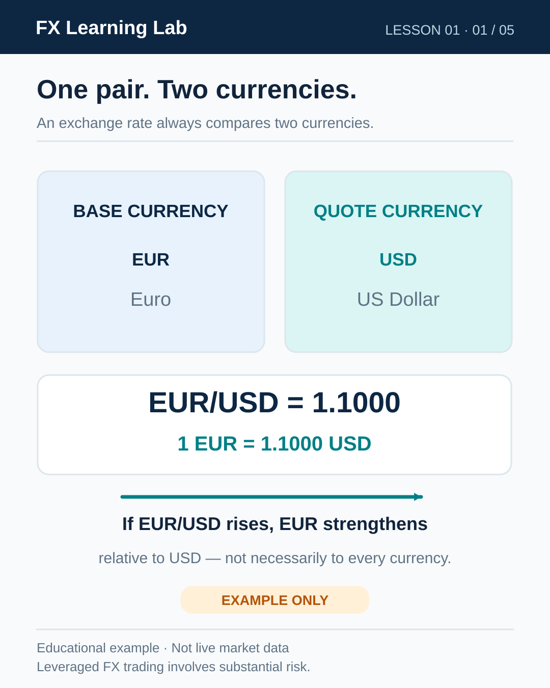
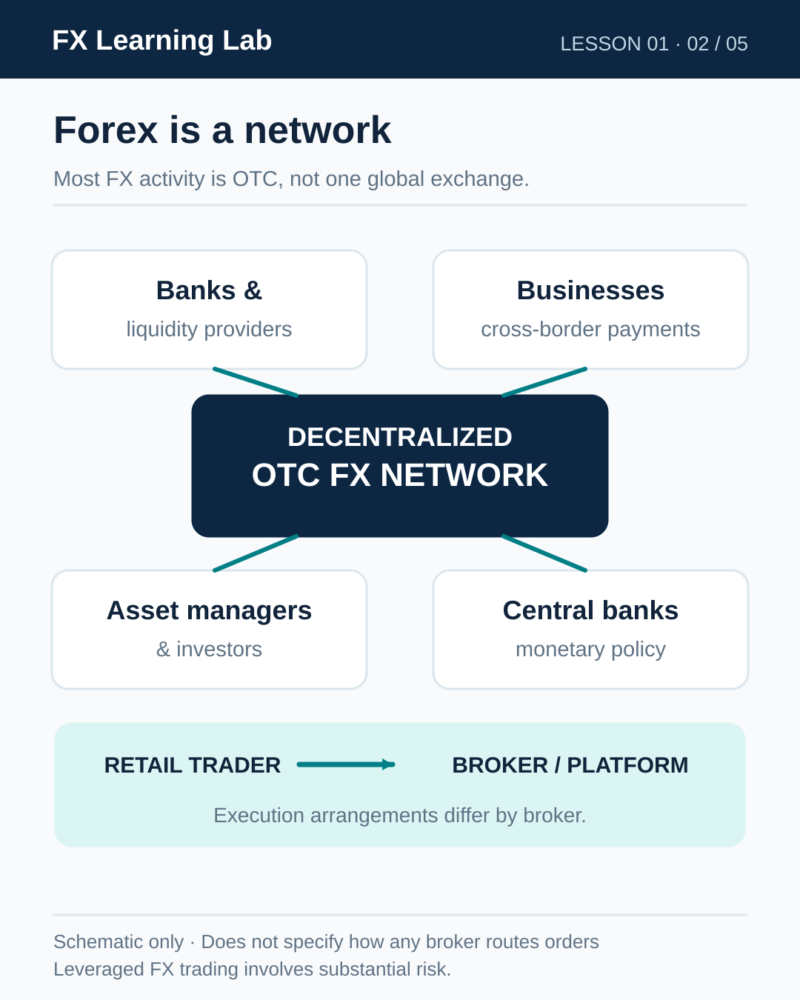
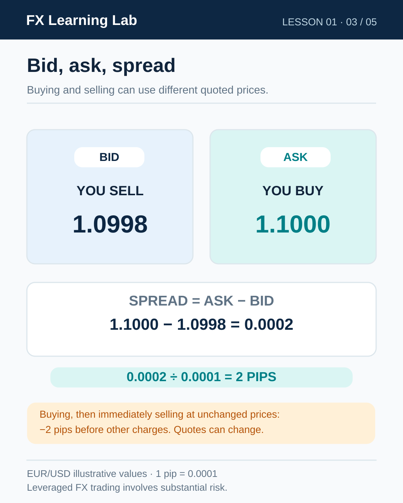
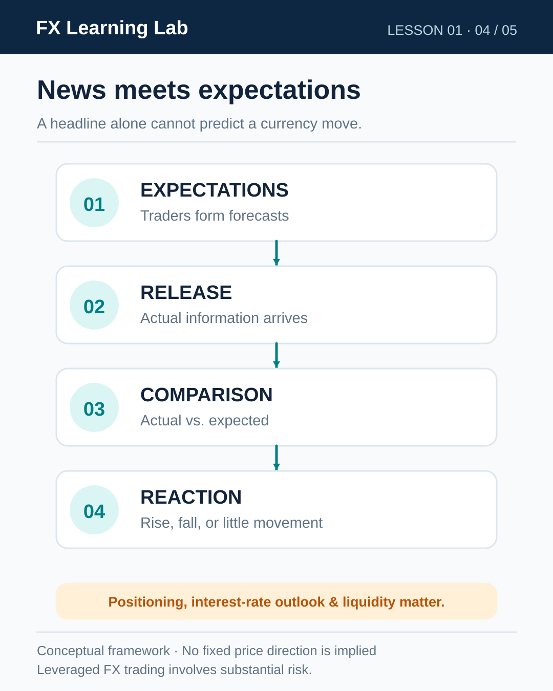
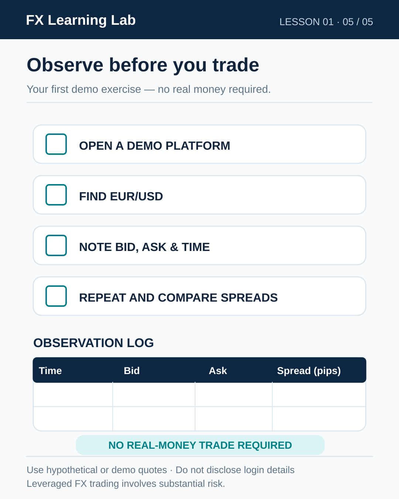

This lesson explains the mechanics. It does not recommend a trade, a broker or a level of risk suitable for you.
1. One pair. Two currencies.
Every forex quote compares two currencies. EUR/USD = 1.1000 means that one euro is priced at 1.10 US dollars. EUR is the base currency and USD is the quote. If EUR/USD rises, the euro becomes more expensive relative to the dollar, not necessarily relative to every currency.

2. A network, not one exchange.
A large part of FX trading takes place over the counter through multiple counterparties and electronic venues. Banks, companies, investors and central banks trade for different reasons. Retail traders normally access forex through brokers. The way a broker prices, internalizes or routes transactions varies by provider.

3. Bid, ask and spread.
Retail quotes typically include two prices. The bid is the price at which you can sell the base currency; the ask is the price at which you can buy it. The difference is the spread, one of several costs alongside potential commissions, financing and slippage.

4. Markets react to expectations.
Exchange rates respond to interest-rate expectations, economic data, cross-border flows, positioning and liquidity. A headline alone cannot predict direction. Even apparently positive data may already be reflected in the price, or it may change expectations in an unexpected way.

5. Observe a demo quote.
Open a suitable demo platform, find EUR/USD and write down the bid, ask and time. Repeat later. Compare your spread calculations and note whether quotes changed. This exercise does not require placing a trade.

1.1000 − 1.0998 = 0.0002. For EUR/USD, 1 pip = 0.0001; the spread is 2 pips. The cash value depends on position size.
Use hypothetical figures or demo quotes to repeat the examples. Write down what you observed and any assumptions you made.
Sources and editorial approach
Based on the author-developed FX取引分析大全 (2026), adapted and reviewed for beginner education. Independent risk and execution references: